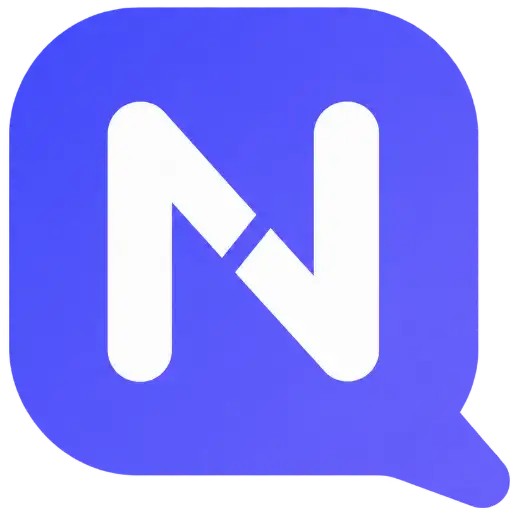

Shared Inbox
Keep customer conversations organized with assignment, status and team handoff tools.
A business messaging and customer communication platform for WhatsApp campaigns, shared conversations and AI-assisted communication workflows.

NOTIQ Business Messaging & Customer CommunicationBring customer messaging, campaigns, and assisted responses into one workspace.
Keep customer conversations organized with assignment, status and team handoff tools.
Prepare messaging campaigns, reuse templates and review delivery progress.
Use business instructions and knowledge sources to support automated replies.
Product capabilities and availability may vary by release or configuration. Contact Bitmint Lab for current access, demonstrations and implementation details. Screens are edited product demonstrations with fictional customer information. Feature access depends on account setup, plan and supported channel availability.
Choose a feature to preview its workspace. Click the screenshot to enlarge it.
Overview, quick access and key workflows
Screenshots contain sample or edited data for illustration; they do not represent actual customer activity or current platform usage.
NOTIQ provides configuration surfaces for messaging channels. Individual connections and capabilities depend on eligibility, configuration, and platform approvals.
The Connections screenshot shows configuration options, not confirmation that every channel is currently enabled.
Set instructions, add knowledge sources and privately test answers before using supported automation workflows.
See the workspace or send a demo enquiry to the Bitmint Lab team.
More products and technology developed by Bitmint Lab.